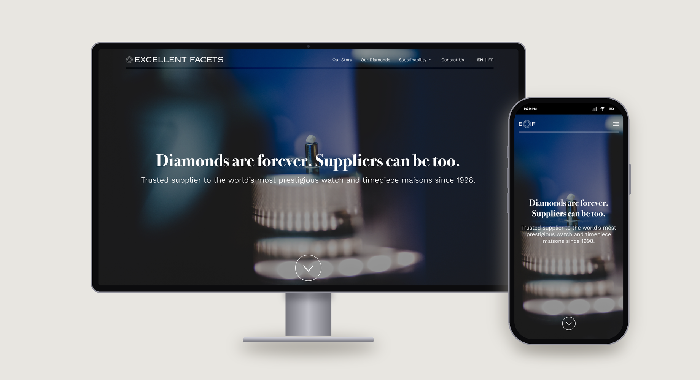

Caso 04 · Sitio web corporativo · UX/UI
Excellent Facets
Rediseño del sitio de un proveedor de diamantes para maisons de joyería y relojería de lujo, en inglés y francés.
- Rol
- UX/UI Designer
- Cliente
- Excellent Facets (Nueva York, Ginebra, París e India)
- Período
- 2024
- Producto
- Rediseño del sitio web corporativo, en inglés y francés, desktop y mobile
- Equipo
- Trabajo directo con el cliente y su equipo de desarrollo, desde Mused

01 / Introducción
Diamantes para las maisons más exigentes
Excellent Facets provee diamantes naturales pequeños (melee), de talla fina y clasificación precisa, y piedras de color fancy. Fue fundada en 1998 y les vende a maisons de joyería y relojería de lujo.
Mi rol
Rediseñé el sitio completo en Figma, en inglés y en francés, para desktop y mobile. Trabajé en contacto directo con el cliente y le entregué a su equipo de desarrollo las pantallas, el prototipo y las animaciones.
02 / El desafío
Lujo, confianza y compromiso
El sitio anterior ya no reflejaba el nivel de la marca ni la forma en que trabaja hoy. Hacía falta una experiencia más actual y más simple de recorrer, y también una versión en francés.
El sitio tenía que hablarle a un público B2B muy exigente. Por eso debía transmitir lujo y confianza y, al mismo tiempo, mostrar a una empresa moderna, sin perder su historia ni el valor de sus productos.
Lo que se pidió
Actualizar el sitio, hacerlo más fácil de recorrer y sumar una versión en francés.
El problema real
Que el sitio no hablara solo de diamantes. La empresa también quería mostrar que produce y vende de forma sustentable, humana y responsable, porque para sus clientes eso es parte de la confianza, tanto en el sitio como en el trato cara a cara.
03 / Mi enfoque
Dos idiomas y dos formatos desde el diseño
- 01
Benchmark de la competencia y de marcas de lujo para definir el tono visual y detectar qué no funcionaba en el sitio anterior.
- 02
Arquitectura del sitio con tres ejes: la historia de la empresa, los diamantes y el compromiso. Los dos últimos tienen menús con sus propias páginas.
- 03
Wireframes de cada página antes del diseño visual.
- 04
Sistema visual:
- Una tipografía serif elegante para los títulos
- Fotografía oscura y de detalle, que pone a cada diamante como protagonista
- Mucho aire entre los elementos
- Componentes reutilizables, como la navegación, los botones, los logos de afiliaciones y el footer
- 05
Dos idiomas desde el diseño. El cliente pidió ver cada pantalla en inglés y en francés, así que diseñé las dos versiones. El francés suele ocupar más espacio, y así se podía revisar que cada pantalla funcionara en los dos idiomas.
- 06
Desktop y mobile, incluidos el menú mobile y los banners de cookies para los dos formatos.
- 07
Prototipo y animaciones para el equipo de desarrollo, y revisiones con el cliente en cada etapa.
Decisiones clave
-
01 · Decisión
Revisar cada pantalla en los dos idiomas
El cliente pidió ver cada pantalla en inglés y en francés. Usé esas versiones para comprobar que cada pantalla funcionara con los textos en francés, que suelen ocupar más espacio.
- A cambio de
- El doble de pantallas para diseñar y revisar.
- Resultado
- Pantallas que funcionan en los dos idiomas, aunque el francés ocupe más espacio.
-
02 · Decisión
El compromiso al mismo nivel que los diamantes
Puse la sustentabilidad entre los tres pilares de la home y le di su propio menú, al mismo nivel que los diamantes.
- A cambio de
- Espacio en la home que podría haber sido para el producto.
- Resultado
- Un mensaje de confianza que acompaña al de calidad desde el inicio.
-
03 · Decisión
Mucho aire y el diamante como protagonista
Dejé mucho aire entre los elementos y usé fotografía oscura y de detalle, en lugar de mostrar mucho contenido por pantalla.
- A cambio de
- Más scroll para recorrer el sitio.
- Resultado
- Una lectura pausada, a la altura de una marca de lujo.
04 / La solución
Un sitio a la altura de la marca
Home
- Hero
- “Diamonds are forever. Suppliers can be too.” Es una frase que junta la idea de lujo con la de un proveedor confiable a largo plazo.
- Facets of Excellence
- Los tres pilares de la empresa (Heritage, Curation y Compliance), con pestañas y una animación de un diamante que acompaña el recorrido. Compliance pone la trazabilidad, la neutralidad de carbono y la responsabilidad social al mismo nivel que la calidad de los diamantes.
- The Company
- La historia y los indicadores de calidad de la empresa.
- Round-the-world locations
- “Round-the-world locations. Round-the-clock service.”: relojes con la hora de cada oficina, para mostrar el alcance global y la atención a toda hora.
- Our Affiliations
- Los logos de las organizaciones del sector y de sustentabilidad.
- Cierre
- Newsletter, contacto y direcciones de las oficinas.
El resto del sitio
- Our Story
- Cuenta la historia de la empresa con una línea de tiempo de sus hitos, y presenta al equipo y sus valores.
- Our Diamonds
- Cada tipo de diamante tiene su página, como White Mêlée, Fancy Color y Single-Cut. Por ejemplo, la de Round Mêlée incluye “The Excellent Facets Standard”, con las especificaciones de pureza, tamaño, color, talla, pulido y simetría, y una sección sobre su política de cero diamantes sintéticos.
- Compromiso
- Hay una página para cada tema: Sustainability, 100% Synthetic Free, Responsible Sourcing, Socially Compliant Manufacturing, Philanthropy y Human Rights. La de Sustainability, por ejemplo, reúne la certificación de carbono neutral, los reportes anuales y los Objetivos de Desarrollo Sostenible de la ONU con los que trabaja la empresa.
- Contacto
- Es una página con un formulario corto y las direcciones y teléfonos de cada oficina.
05 / Resultado
Del prototipo al sitio publicado, en dos idiomas
El equipo de desarrollo del cliente implementó el rediseño a partir de las pantallas, el prototipo y las animaciones. Hoy está publicado en excellentfacets.com ↗, en inglés y en francés.
06 / Qué aprendí
En una marca de lujo, la confianza no viene solo del producto. Mostrar cómo trabaja la empresa le dio al sitio tanto peso como mostrar sus diamantes.